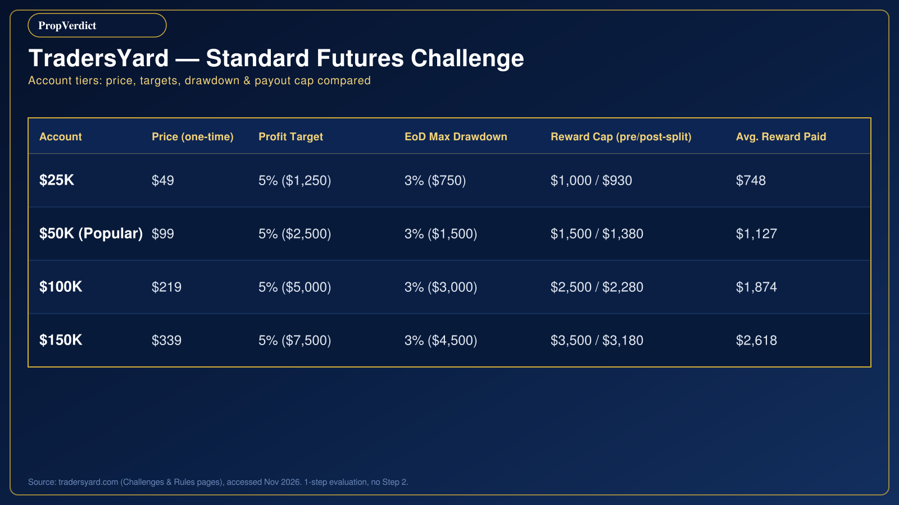
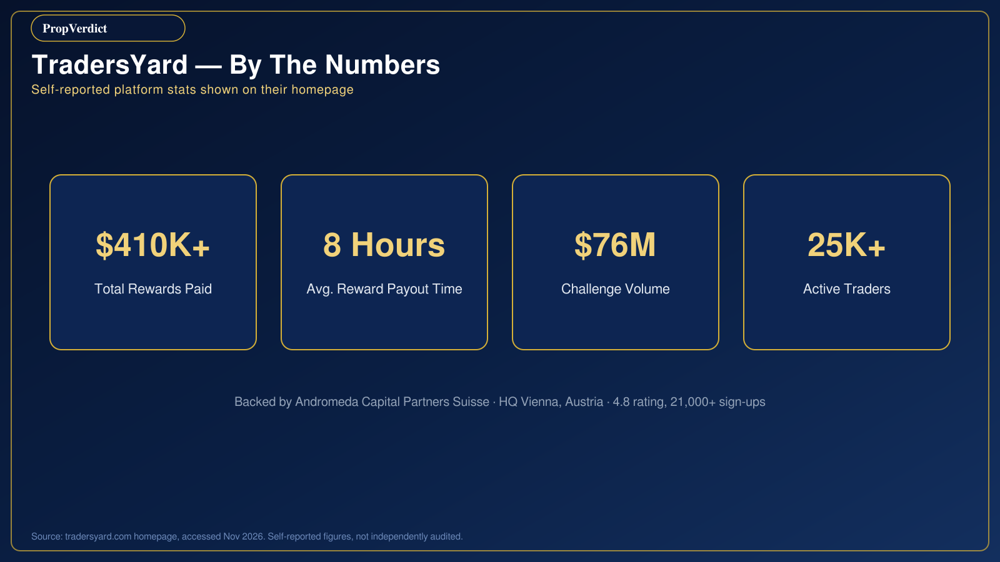

TradersYard Review: Fees, Conditions & Profit Split Explained (2026)
Updated: 2026-11-18 · Source: tradersyard.com
TradersYard is a prop trading firm offering 4 challenge account sizes — $25K, $50K, $100K and $150K — with entry fees ranging from $49 to $339 depending on the account size. This article summarizes the challenge conditions, fees, payout policy and profit split based on publicly available information from TradersYard's official website.
Challenge Conditions
| Criteria | Value |
|---|---|
| Account sizes | $25K / $50K / $100K / $150K |
| Entry fee | $49 – $339 |
| Profit target | 5% |
| Max drawdown (End of Day) | 3% |

Profit Split & Payout Policy
TradersYard uses a tiered profit split:
- 100% of the first $300 withdrawn
- 90% of profit above $300
Traders can withdraw 50% of profit per payout cycle. Reward caps by account size range from $930–$1,000 (smaller accounts) up to $3,180–$3,500 (largest account), with an average recorded payout of roughly $748–$2,618 depending on account size.

Real Numbers From TradersYard
- Over $410,000 in rewards paid out to traders
- Average payout processing time: 8 hours
- Total trading volume: $76 million
- Over 25,000 traders onboarded

PropVerdict's Take
TradersYard suits traders who want a low entry fee (from $49) and fast payout processing (averaging 8 hours). The 90% profit split above $300 and the 50%-per-cycle withdrawal policy are advantages compared to some prop firms with longer payout lock-up periods. Traders should always double-check the latest terms on the official website before signing up, as prop firm policies can change over time.